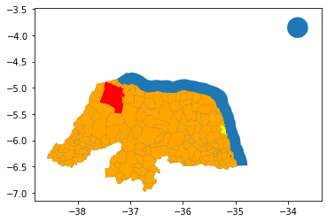
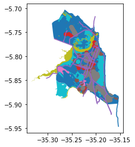

Example¶
[1]:
import geohunter as gh
api = gh.osm.Eagle()
state = api.get('(-8.02, -41.01, -3.0, -33.0)',
largest_geom=True,
name='Rio Grande do Norte')
city = api.get('(-8.02, -41.01, -3.0, -33.0)',
largest_geom=True,
name='Natal')
poi = api.get(city,
amenity=['school', 'hospital'],
highway='primary',
natural='*')
all_cities = api.get(state, sjoin_op='within',
admin_level='8')
biggest_city = api.get(state, sjoin_op='within', largest_geom=True,
admin_level='8')
Geohunter: [TIMELOG] get -- {'largest_geom': True, 'name': 'Rio Grande do Norte'} -- Completed in 2.8099s
Geohunter: [TIMELOG] get -- {'largest_geom': True, 'name': 'Natal'} -- Completed in 1.2079s
Geohunter: [TIMELOG] get -- {'amenity': ['school', 'hospital'], 'highway': 'primary', 'natural': '*'} -- Completed in 5.8873s
Geohunter: [TIMELOG] get -- {'sjoin_op': 'within', 'admin_level': '8'} -- Completed in 3.1931s
Geohunter: [TIMELOG] get -- {'sjoin_op': 'within', 'largest_geom': True, 'admin_level': '8'} -- Completed in 2.7193s
[2]:
ax = state.plot()
all_cities.plot(ax=ax, color='orange')
biggest_city.plot(ax=ax, color='red')
city.plot(ax=ax, color='yellow')
[2]:
<matplotlib.axes._subplots.AxesSubplot at 0x1a292cff10>

[3]:
poi.head()
[3]:
| type | id | tags | geometry | key | item | name | |
|---|---|---|---|---|---|---|---|
| 0 | node | 501170977 | {'amenity': 'school'} | POINT (-35.23427 -5.86902) | amenity | school | NaN |
| 1 | node | 501170997 | {'amenity': 'school', 'name': 'Centro de Atenç... | POINT (-35.22261 -5.82361) | amenity | school | Centro de Atenção Integral a Criança e ao Adol... |
| 2 | node | 501784871 | {'amenity': 'school'} | POINT (-35.21073 -5.81294) | amenity | school | NaN |
| 3 | node | 501784918 | {'amenity': 'school', 'name': 'Escola Boa Ideia'} | POINT (-35.22495 -5.87417) | amenity | school | Escola Boa Ideia |
| 4 | node | 502442042 | {'amenity': 'school'} | POINT (-35.23957 -5.84999) | amenity | school | NaN |
[5]:
ax = city.plot()
poi.plot(ax=ax, column='item')
[5]:
<matplotlib.axes._subplots.AxesSubplot at 0x1a2d02a810>
